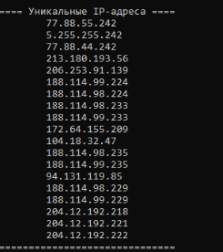

Пару дней назад, при использовании DoH https://dns.controld.com/comss стали недоступны все сервисы microsoft (любые обновления системы, OneDrive, Copilot, store, сам сайт microsoft.com и т.д.). При этом все остальные ресурсы с гео блокировкой работают отлично.
Может кто сталкивался уже ? Покопался на форумах comms, не у меня одного, но проблема не особо массовая. Представители отвечают, что провайдеры блокируют IP, которые они отдают для этих ресурсов. Это для меня что-то новенькое. У кого megafon, можете проверить у себя ? Да и на других провайдерах работает ?
РТК. Мелкософт открылся, но на каком-то нерусском. Остальным уже года 3 как не пользуюсь
Я сейчас про https://dns.controld.com/comss Мне бы понять, в чем причина, в DoH или в провайдере ? Странная ситуация.
У меня еще в автохостлист залетел какой-то домен мелкософта, но я его удалил, не запомнив
Это точно не касается запрета, тут о DNS и гео-блокировках. Ну, если интересно, рад буду помощи.
Да фигня это все. Сейчас попробовал скачать ISO последней винды - послали нафиг. DoH от комсса естественно.
@BorisP
Можешь у них спросить.
https://www.comss.ru/disqus/page.php?id=12919
В целом они писали про проблемы с мегафоном для определенных сайтов и поправить не могут ничего, про микрософт там не было вроде ничего.
На мгтс у меня тоже iso не скачивается из за ГЕО через comss.
про мегафон
{kind=link}
Т.е. уверенность что https://dns.controld.com/comss чудит ? У меня вот сомнения… Массовых жалоб то нет.
Переформулирую вопрос. У вас открывается сайт microsoft.com с DoH https://dns.controld.com/comss ? Проверьте пожалуйста. Если нет, то буду с ними общаться…
да открывается
- я дебил, проверял до этого через клаудоский doh, с comss и iso качает и сайт открывает
Они включили перенаправление через свой прокси или что у них там. Вот и результат.
{kind=link}
у тебя программа обновлена? Resolve And Whois v1.3 by Ori чё то так не умеет
Нет, не обновлена… вроде? Не помню. 
ResolveAndWhois_1.3.zip (6,2 МБ)
разобрался спс_
Ну и правильно, что пустили. Гео обход — это их главная фишка, только работает криво. Пытаюсь с ними разобраться, в чем может быть проблема. Напомню, 3 дня назад все работало идеально.
3 дня назад сайт (как минимум live.com, сам microsoft.com не проверял) шел напрямую, а не через них. Лично я из-за этой ситуации решил отказаться от их dns. Мне не очень хочется чтобы мои обращения к почтовому ящику и облаку onedrive шли через третью сторону.
Существует какой либо аналог commss.dns? Поиск не дал результатов кроме controld uncensored, но там сайтов кот наплакал.
Я кстати так и не понял любовь некоторого числа местных обитателей к dns от controld-comss. У меня DoH3 чистый от control d стоит - проблем не наблюдаю ( freedns.controld.com/p0 ).
Ну, вроде оно и незачем 
{kind=link}
{kind=link}
Обход геоблокировок. Такого я нигде не видел.
Даже 403 на гуглвидео обойдет? На инвидиосе такие помечены обычно Blacklisted regions: BY, RU
нет
Есть иранский https://free.shecan.ir/dns-query, но там свои проблемы. Он может обойти геоблок на некоторых сайтах, типа интела или чатЖПТ, но другие сайты с ним вообще не открываются (следствие иранских блокировок, полагаю). Т.е. просто через браузер его использовать не будешь.
а ты можешь добавить его в свой скрипт IPfinder.cmd?
Так смысла нет. Там пара адресов прокси, которые выдаются для всех заблоченных сайтов и всё. Зарезолвь интел.ком и узнаешь их. Больше ничего нового этот днс не даст. Аналогичная история и с комсс.
Плюс, я уже делал вот эту штуку, для любых резолверов с custom subnet.
IPfinder.zip (6,3 МБ)
Справка флагом -?, дальше разберешься.
спс гляну
в старой версии пинг красивый))
Достучался до разрабов. Как говорят, у controld проблемы с РКН, откатились на свой старый сервис, будут развивать его. У меня все заработало:
Желающие могут потестировать Comss DNS:
https://dns.comss.one/dns-query
tls://dns.comss.one
quic://dns.comss.one
IP:
2a03:6f02::6a4a
195.133.15.183
Спойлер
ControlD принадлежит Windscribe диапозон IP у них не бесконечный. РКН в попытках банить их основной сервис уже сделал недоступным часть прокси-серверов, поэтому используются ещё те которые живы у большинства. Основная проблема блокировки не массовые, а проходят A/B тестом на ТСПУ, поэтому бывает моменты, когда перестает работать у части пользователей, а не у всех. Поэтому администрация и возвращается к старому формату реализации своими силами
Добрый вечер.
Не могу найти сертификаты домена doh сервера для установки в микротик. Установил root ca bundle и ставил отдельно разные сертификаты от Setigo, но при добавлении адреса doh сервера https://dns.comss.one/dns-query в логах микротика появяется сообщение: DoH server connection error: SSL: ssl: no common version. Подскажите пожалуйста, где скачать нужные сертификаты.
Ну а из этого гайда не проходят ?
https://www.comss.ru/page.php?id=12996
Из этого и ставил, это бандл, в нём около 150 сертификатов, вроде как и серты Setigo есть, но лог пишет ошибку.
Тогда могу только посоветовать задать вопрос тут:
https://www.comss.ru/disqus/page.php?id=7315&ht-comment-id=21249025
А не слышно ничего про публикацию списка проксируемых доменов? Они собирались, но потом это как-то заглохло.
Не задавал такой вопрос, сейчас сервис в тесте. Все обновляется ежедневно.
они там и пишут что оставят только ИИ, инсайдерские обновления, антивирусы и Brawl Stars.
Попробуйте зайти на сайт https://dns.comss.one/dns-query и через браузер экспортировать их, и импортировать в микротик.
USERTrust RSA Certification Authority
Sectigo RSA Domain Validation Secure Server CA
dns.comss.one
Проверьте, что serial number или fingerprint сертификатов совпадают с теми что у вас на микротик
ps. там в инструкции указан адрес https://dns.controld.com/comss. С ним работает.
Сделал, короче, вот такую штуку. Опрашивает все резолверы из списка в json’ке и выводит в конце результат.
это он только ipv6 выводит?
{kind=link}
По умолчанию там ipv4 ищется. Можно указать флагом +4 или +6. Там есть справка флагом -? или -h.
прикольно
не хватает общего списка уникальных ip и пинга как в IPfinder
ps
прикрутил батником итоговый список

Добавил вывод уникальных айпи листом в начале + добавил отображение времени ответа ДНС и сортировку (от самого быстрого к самому медленнному) + багфиксы.
ссылка
топчик
а сделать пинг уникальных ip, как в IPfinder.cmd нельзя?
если встроить нельзя можешь подсказать как его отдельно запускать? если эти уникальные ip будут выгружаться в txt файл, а запуск скрипта запускал бы пинг и брал бы значения из этого файла.
Для начала стоит отметить, что не все айпишники, возвращаемые прогой, одинаково полезны. Т.к. я понатыкал туда много разных резолверов, то часть найденных айпи - это заглушки.
Например, там есть иранские резолверы (отмечены как {IR} в названии). Многие из них имеют функционал схожий с comss (т.е обход геоблокировок). Однако, они также часто упираются в иранские блокировки и выданные ими айпи никуда не ведут.
Тоже самое с family-резолверами, типа Clean Browsing DNS, которые могут не дать корректный айпи для, например, соцсетей или сомнительных сайтов.
Поэтому сначала надо не скорость проверять, а whois сделать или запросить хедеры, чтобы понять, валидный это айпи или нет.
Я добавил вывод в лог, а также положил в архив батник, которым можно отфилтровать найденные айпи из лога. Просто перетаскиваешь логфайл на батник и готово. Ссылка для скачивания всё та же, из поста выше.
понял, спс
правда почему то перетаскиванием не работает, переделал просто в поиск log и обработку файла, но мне так даже удобней чем перетаскивать
DNS-over-HTTPS (DoH)
https://dns.comss.one/dns-query
DNS-over-TLS (DoT)
dns.comss.one или tls://dns.comss.one
DNS-over-QUIC (DoQ)
quic://dns.comss.one
Стандартные серверы
IPv4-адреса:
195.133.25.16 195.133.25.99
IPv6-адреса:
2a03:6f00:a::3f24 2a03:6f00:a::2944
Я бы пока не стал рекомендовать. Глючит жутко. Нужно подождать пока доделают.
Update на 07/12. Проверяйте, у меня все что нужно работает.